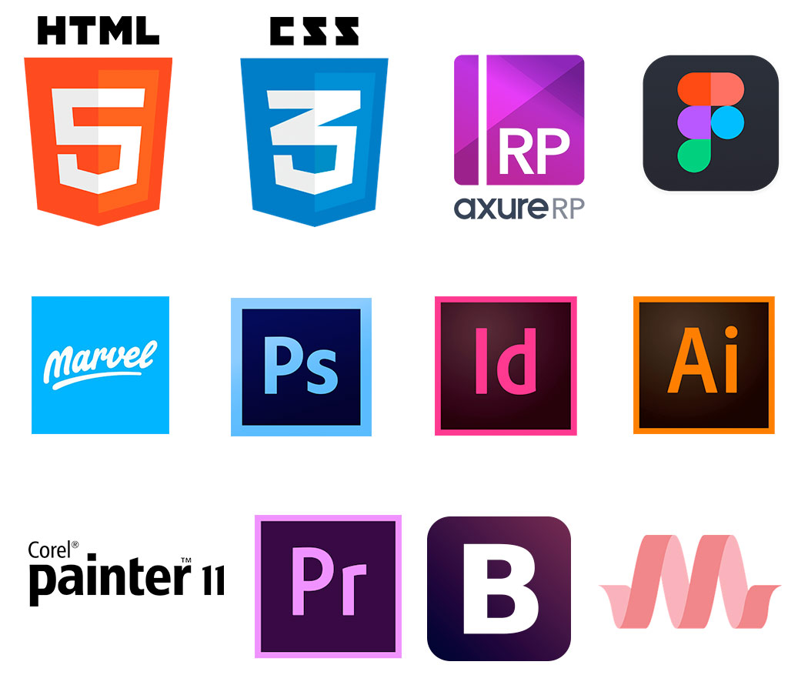

Soy Diseñadora gráfica e Ilustradora de la Pontificia Universidad Católica de Valparaíso, y últimamente me capacité en Diseño UX o Diseño de experiencia de usuario, campo en el cual estoy en la búsqueda de desarrollo profesional.
Realizar la transición del Diseño gráfico al Diseño centrado en la experiencia del usuario (Diseño UX) se ha dado naturalmente, ya que siempre he tenido en cuenta la visión de las personas, sin embargo en este nuevo desafío profesional me doy cuenta que me encanta entender a los usuarios, investigar y hacer productos que quieran usar y es por eso que quiero desarrollarme como UX Designer y de este modo seguir aprendiendo.
Mis habilidades van desde el conocimiento gráfico, editorial y de ilustración pasando por conocimiento base de HTML5,CSS3,frameworks como Bootstrap, y por el lado del Diseño UX, habilidades de User research y capacidad para prototipar MVP de alta fidelidad.
Busco ser parte de un equipo de trabajo multidisciplinario donde pueda aprender día a dia, y aportar desde mi curiosidad respecto al Diseño UX.
Me interesa aprender más con la práctica sobre la etapa de Investigación de Usuarios, y Testing, así como también arquitectura de la información y Diseño de interacción.
Como desafío me gustaría retomar estudios sobre programación y así poder conectarlos con el Diseño centrado en los usuarios, pues si bien tengo una base creo necesario profundizarlos, sobre todo en el ámbito UI. Así como también llevar a la práctica lo que he aprendido en Diseño UX, ya que pasar de la teoría a la práctica supone un tremendo cambio para una Diseñadora UX que empieza a enfrentarse con la realidad.
San Ignacio de Loyola 1372
Depto 701
Santiago Centro
nataliaconstanz@gmail.com
Teléfono: (+56) 9 8 532 14 61